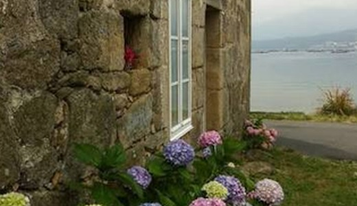
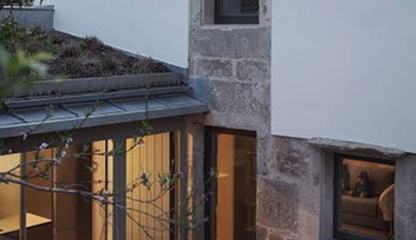
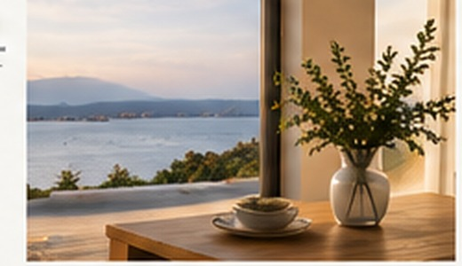

01
Conocemos tu casa
La visitamos, revisamos y entendemos sus necesidades.
Supervisión, gestión y atención personalizada de tu vivienda en Galicia.
Descubre nuestros servicios→Nos ocupamos de lo que realmente importa, dentro y fuera de tu casa.

La visitamos, revisamos y entendemos sus necesidades.
Comprobamos que todo esté en orden, por dentro y por fuera.

Gestionamos incidencias y coordinamos profesionales de confianza.

Recibes información clara, fotografías y avisos cuando sea necesario.
Adaptamos el servicio a tu casa, su ubicación y el tiempo que pasas fuera.
Ver dossier y tarifas →Estado general, instalaciones y entorno.
Coordinación con profesionales de confianza.
Jardín, terraza, limpieza y exteriores.
Información clara después de cada visita.
Una persona cercana y disponible.

Soy Tatiana, la persona detrás de HabitarAtlántico.
Durante años he trabajado en un entorno donde la responsabilidad, la atención al detalle y la capacidad de resolver imprevistos forman parte del día a día.
Creé HabitarAtlántico porque entiendo lo que significa tener una vida lejos de una casa que quieres conservar, disfrutar y cuidar.
Mi objetivo es sencillo: que cuando tú no puedas estar, sepas que alguien está pendiente de ella.
Cuéntanos dónde está tu vivienda, cómo la utilizas y qué necesitas. Estudiaremos tu caso y te explicaremos cómo podemos ayudarte.
Hemos recibido tu solicitud correctamente. Nos pondremos en contacto contigo para conocer mejor tu vivienda y explicarte cómo podemos ayudarte.